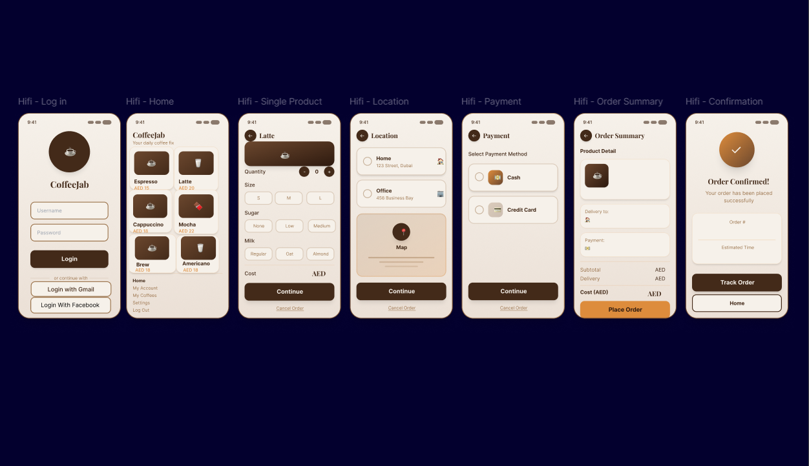
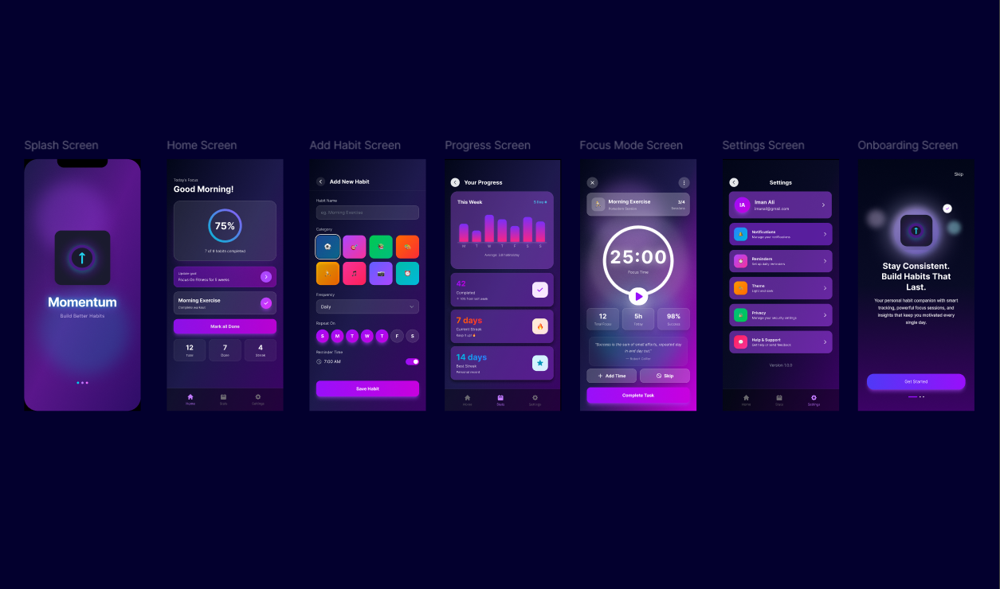
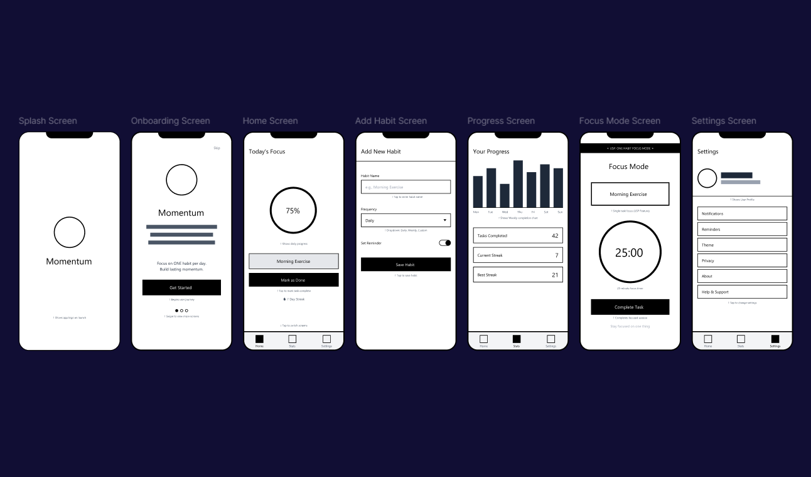
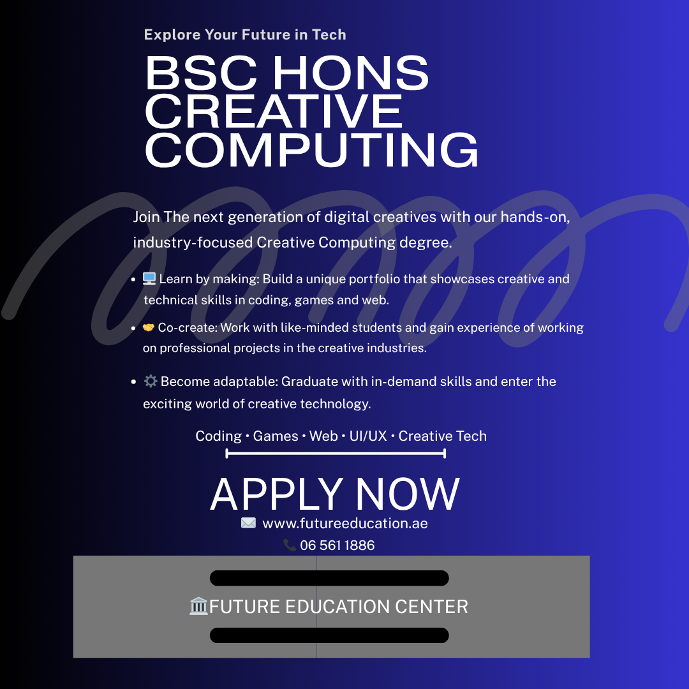

Here are some of the projects I have worked on across different modules during my first year.

A mobile coffee ordering app designed in Figma. The app allows users to browse a menu, customise their order and checkout with a clean and simple flow. I focused on making the layout easy to use with clear buttons and a consistent colour scheme throughout.
Figma, UI/UX Design
A high fidelity habit tracking app designed in Figma. The app helps users track daily habits with a progress dashboard and streak system. I designed it to feel motivating and easy to navigate, using purple tones and clean card layouts to keep things organised.
Figma, UI/UX Design
A low fidelity wireframe and component library built for the Momentum app. I created reusable UI components including buttons, cards and input fields to keep the design consistent across all screens. This helped me plan the layout before moving into the high fidelity design.
Figma
A promotional poster designed in Canva for the BSc Creative Computing degree. I used bold typography, a dark background and strong layout principles to make the design eye catching. The goal was to communicate the course in a visually engaging way that would appeal to prospective students.
CanvaAn interactive generative artwork built using p5.js. The piece responds to user input and creates visual patterns using shapes, colour and motion. I made this as part of my Creativity in Coding module to explore how code can be used as a creative and artistic tool.
P5.js, JavaScriptA dodge game built in p5.js where the player controls a character and avoids incoming blue pulse waves using keyboard controls. I built the collision detection, movement system and difficulty scaling from scratch. This project helped me understand game logic and how JavaScript handles real time interaction.
P5.js, JavaScript